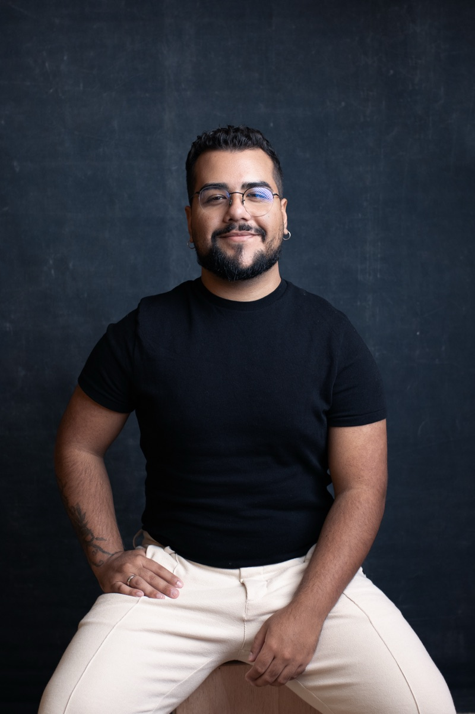
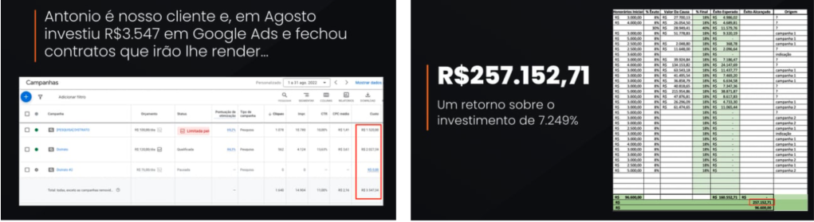
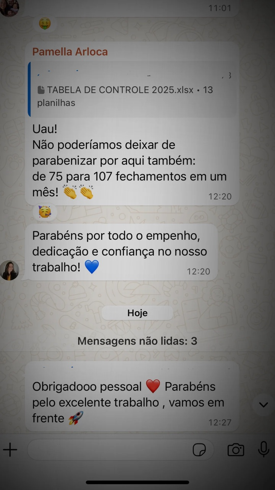
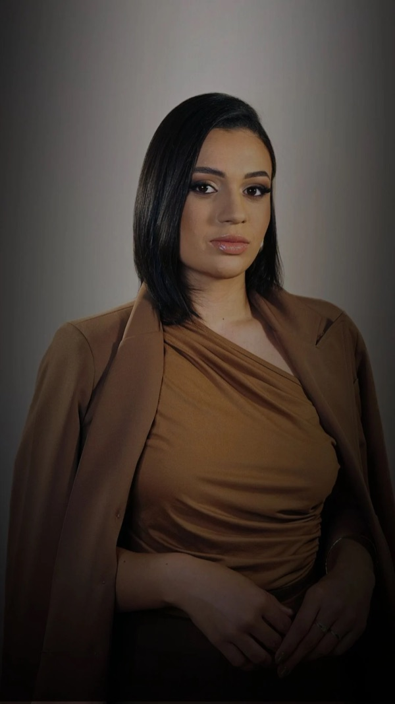
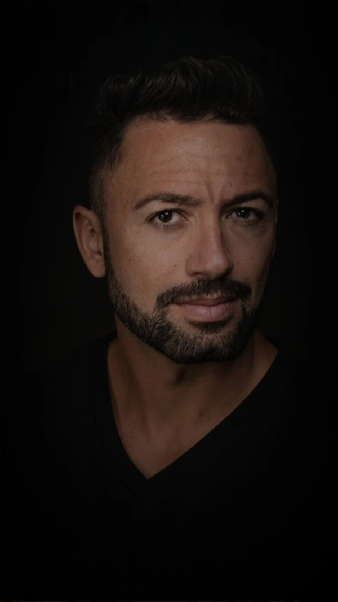
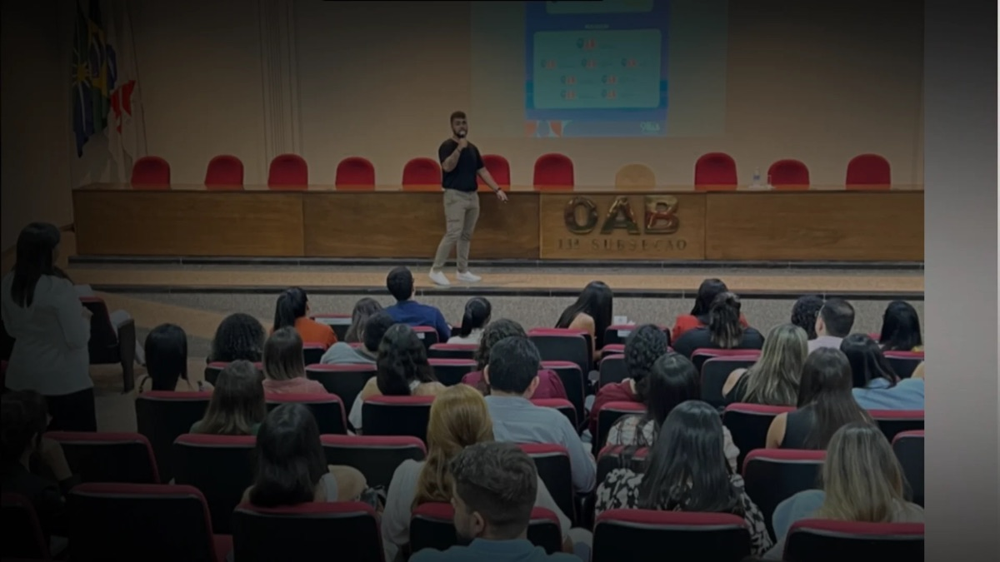

Tudo que você precisa saber sobre o meu trabalho está nesta página.
Deixa eu adivinhar: seu escritório fatura bem, você tem equipe — e tráfego pago você já tentou. Com agência ou por conta própria. O que voltou foi curioso no WhatsApp, relatório bonito de clique… e a sensação de dinheiro queimado. Até fechou um contrato ou outro, mas você sabe que dá pra muito mais do que isso.
Nesta página eu vou te mostrar exatamente por que foi assim — e o que muda quando a campanha é feita por quem só atende advogado. Lê até o fim: quando a gente conversar, você já vai saber de tudo.
Agora, sobre o que eu faço…
Em marketês: gestão de tráfego pago — Google e Meta Ads — exclusivamente para advogados: escolha estratégica de tese, página exclusiva, rastreamento por contrato fechado e acompanhamento do comercial. Tudo dentro do Provimento 205/2021 da OAB.
Em português: eu pego o tráfego que já te decepcionou e transformo ele no canal mais previsível de contratos do seu escritório. Você para de torcer por indicação, seu time atende lead qualificado — e você constrói o nome de referência na sua tese, na sua região ou no Brasil inteiro.
🎯 Então vamos lá. Isso aqui é pra você que:
- já investiu em tráfego — com agência generalista ou por conta própria — e o que voltou foi curioso e relatório de clique;
- fecha um contrato ou outro com anúncio e sabe que está rodando a uma fração do potencial;
- toca as campanhas sozinho e isso virou um segundo emprego que você não tem mais tempo de fazer bem — e quer entregar pra um profissional de verdade, porque estagiário de agência aprendendo na sua verba você não aguenta de novo;
- tem equipe pra atender o dobro de clientes — o gargalo é demanda qualificada chegando;
- quer ser referência na sua tese — na sua cidade ou no Brasil inteiro.
❌ Agora, deixa eu ser igualmente claro sobre quem fica de fora. Se você:
- está começando do zero, sem caixa e sem carteira — o método pressupõe um escritório já rodando;
- não pode sustentar pelo menos R$ 2 mil/mês de verba de mídia (além do serviço) — campanha sem combustível não sai do lugar;
- quer milagre em 30 dias — tese tem maturação, e quem promete isso está te enganando;
- quer assinar o contrato e desaparecer do projeto — captação tem decisões que só o dono pode tomar.
eu não sou a pessoa certa pra você. E tá tudo bem: melhor descobrir isso aqui, de graça, do que seis meses depois.
Ficou? Então continua — porque agora vem a parte que você tem todo o direito de duvidar: os números. Inclusive aquele caso fora da curva.
📈 Pra você confiar em mim, dá uma olhada no que a gente já construiu:
R$ 3.500 investidos em Google Ads → R$ 257 mil em honorários, faturados no primeiro mês de campanha. É o nosso caso fora da curva — tese certa, na região certa, com ticket alto. Ele está aqui pra te mostrar até onde vai o teto. A média que eu sustento é outra: piso de ROI 5× nas contas ativas, normalmente acima de 10. Quem te mostra só o teto e esconde o piso está te vendendo loteria.
4+ anos atendendo SÓ advogado. Recuso clínica, recuso e-commerce, recuso infoproduto. Especialista de verdade é quem abre mão do resto.
+100 escritórios atendidos e 43 nichos jurídicos mapeados um por um — sim, a gente contou.
Máximo de 3 escritórios novos por mês. Operação enxuta de propósito com apenas 5 pessoas no time. Escolhemos de verdade qual cliente entra na casa.
- 2021: comecei cuidando do tráfego para um escritório grande, do Dr. Euro Júnior;
- 2022: decidi atender só o jurídico — e recuso todo o resto desde então;
- Hoje: já temos mais de 20 teses jurídicas validadas fechando contrato e com ROI de 5x no mínimo.

Daniel Padilha — fundador da Pongui.
Alguns dos parceiros que confiaram na Pongui:
São + de 100 parceiros atendidos
Mas número falado é fácil — qualquer agência fala. Então deixa eu te mostrar os prints. Inclusive o daquele caso fora da curva.
👀 Veja você mesmo:

Cliente: advogado imobiliário · R$ 3.500 em Google Ads → R$ 257 mil em honorários no 1º mês
Cliente: advogado bancário
Cliente: advogado trabalhista

Cliente: advogado de trânsito
Não pedi avaliação "bonitinha" pra ninguém, tá? O que está aqui é print real e cliente real.
E uma regra minha: case de cliente não vira vitrine pra concorrente da mesma tese. Quando você for meu cliente, essa regra protege você.
E não são só os escritórios que confiam — olha quem mais coloca o nome ao lado do nosso trabalho:


Players que confiaram no nosso trabalho: Dra. Rayelle, Dra. Vivian e Dr. Euro.
E quando não estou nas contas, estou ali no palco: eventos do mercado jurídico, falando das mesmas estratégias que rodam nos escritórios que você acabou de ver.

Bom — se você chegou até aqui, já sabe tudo que precisava saber. Falta só o próximo passo. Mas antes dele, um último aviso.
Aplique para a minha assessoria de tráfego que vem gerando demanda qualificada para mais de 20 teses jurídicas diferentes.
⚠️ ATENÇÃO — NÃO preencha se você:
- quer resultado garantido em 30 dias;
- não é advogado(a) nem atua no mercado jurídico;
- não pode sustentar a verba mínima de mídia;
- só quer saber preço por curiosidade.
(leia a lista vermelha antes de clicar)
❓ Ainda com uma dúvida na cabeça? Deve ser uma dessas:
Já tentei tráfego e não funcionou. Por que com vocês seria diferente?
Porque provavelmente ninguém tratou os três erros mais comuns em tráfego para advogado: anúncio genérico, otimização por clique e ausência de tese. E isso quem responde é o diagnóstico que eu faço nos seus números, antes de você decidir qualquer coisa. Se a sua conta anterior estava certa e o problema era outro, eu te falo isso também.
Não sei se o meu público está no Google e no Meta.
Está. Quem tem problema jurídico hoje pesquisa antes até de pedir indicação — o Google captura quem digita o problema; o Meta encontra quem tem o perfil de quem o vive. Em 4+ anos e 43 nichos mapeados, eu ainda não encontrei tese sem demanda digital — encontrei muita tese anunciada errado. E se o seu caso for a exceção, o diagnóstico mostra isso antes de você gastar um real. Eu te falo.
Vocês garantem resultado?
Não. E desconfia de quem garante. O que eu sustento com dado: piso de ROI 5× nas contas ativas, normalmente acima de 10 — e o caso fora da curva você já viu, com o devido aviso.
Eu preciso participar do projeto?
Precisa — mas calma, do operacional não: campanha, página, criativo e otimização são entrega minha. O que eu preciso de você são as decisões de tese, a validação da estratégia e um comercial atendendo rápido. Projeto de captação com dono ausente morre — e eu já vi morrer. Se o seu momento é de sumir por seis meses, melhor não começar.
Preciso gravar vídeo?
Não é obrigatório — rodamos com criativos de imagem feitos por nós. Vídeo performa melhor, então se topar gravar, você manda o material cru e corte, legenda e trilha são por minha conta.
Qual é o investimento?
Eu não passo preço em página, e o motivo é simples: o plano certo depende do diagnóstico do seu escritório. A conta que importa é outra: quantos contratos por mês pagam o investimento inteiro. Essa conta eu faço COM você, com os seus números de honorário, antes de você decidir qualquer coisa.
Sem mais dúvidas? Então agora é com você.
Te espero do outro lado!
Um abraço, Daniel.